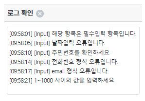

Input의 이벤트와 속성을 사용하여, 입력 값의 유효성을 검사하는 방법들의 예제입니다. 크게 두 가지 방법으로 Input의 이벤트를 이용한 방법과 속성에 사용자 정의 메소드를 선언하는 방법입니다. 사용할 이벤트와 속성은 아래와 같습니다.
이벤트: oneditenter, onviewchange, onchange, onblur
속성: validator, displayformatter
추가로 가장 많이 사용되는 세 가지인 onblur, onviewchange, validator의 실행 순서를 확인할 수 있는 예제를 포함하고 있습니다.
이 문서는 기능 테스트에 대한 가이드를 위해 작성되었습니다. '구현 방법'은 작성되어 있지 않습니다.
oneditenter 사용하기
onviewchange 사용하기
displayFormatter 사용하기
onblur 사용하기
validator 사용하기
실행 순서 확인하기
예제 영역 '로그 확인'의 textarea에 참고용 로그를 출력하고 있습니다.
Image 1.로그 출력 영역 참고 이미지

이벤트 onviewchange를 이용한 날짜 형식 유효성 검사입니다. onviewchange는 사용자가 화면에서 값을 변경한 경우 발생하는 이벤트 입니다. script 상에서 수정된 경우 이벤트가 발생하지 않습니다.
1
STEP 1: 예제 영역 'Event: onveiwchange - 날짜 검증 '의 Input에 텍스트를 입력합니다.
텍스트는 날짜 형식과 날짜 형식이 아닌 텍스트를 각각 입력해 테스트합니다.
(ex. 20230201 -> O , 99999999 -> X)
2
STEP 2: Input에서 포커스를 벗어나게 합니다
"ENTER" 키, "TAB"키, 빈 영역 클릭 등의 방법으로 Input에서 포커스가 벗어나게 해줍니다.
3
STEP 3: '로그 확인' 영역의 로그를 확인합니다.
Example 1.Log
[16:17:38] [Input] 날짜 입력 검증 - 입력 값 : 20230201 [16:17:44] [Input] 날짜입력 오류입니다.
이벤트 oneditenter를 이용한 필수 입력 항목입니다. oneditenter 이벤트는 Input에서 'Enter'키 혹은 'TAB'키를 누를 때 발생합니다.
1
STEP 1: 예제 영역 'Event: oneditenter - 필수 입력 검증'의 Input을 선택해 각각 텍스트 입력/ 미 입력 상태에서 'STEP 2'를 진행합니다.
2
STEP 2: 키보드의 "ENTER" 키 혹은 "TAB"키를 눌러 이벤트 "oneditenter"를 발생 시킵니다.
3
STEP 3: '로그 확인' 영역의 로그를 확인합니다.
Example 2.Log
[16:18:56] [Input] 해당 항목은 필수입력 항목입니다.
이벤트 onchange를 이용한 주민등록번호 유효성 검증 샘플입니다 onchange는 Input 안의 값이 변경된 경우 발생하는 이벤트로, 화면에서 사용자의 조작이나 script 상에서 변경된 경우 모두 발생합니다. script 상에서 변경되어도 이벤트가 발상한다는 점에서 잘 사용되지 않고, 사용자 조작으로만 이벤트가 발생하는 onviewchange가 더 자주 사용됩니다. ex) 9901011234567(실제사용불가) -> (O)
1
STEP 1: 예제 영역 'Event: onchange - 주민번호 검증'의 Input에 텍스트를 입력합니다.
텍스트는 주민등록 번호 형식(ex. 9901011234567(실제사용불가))과 주민등록 번호 형식이 아닌 텍스트를 각각 입력해 테스트합니다.
(ex. 9901011234567(실제사용불가)-> O , 99999999 -> X)
2
STEP 2: Input에서 포커스를 벗어나게 합니다
"ENTER" 키, "TAB"키, 빈 영역 클릭 등의 방법으로 Input에서 포커스가 벗어나게 해줍니다.
3
STEP 3: '로그 확인' 영역의 로그를 확인합니다.
Example 3.Log
[16:20:04] [Input] 주민등록 번호 - 입력 값 : 9901011234567(실제사용불가) [16:20:10] [Input] 주민번호를 확인하세요
onblur를 이용한 유효성 검증 예제입니다. onblur는 Input에서 포커스가 벗어나게 되면 발생하는 이벤트입니다. selectbox에서 범위를 선택하고 숫자를 입력한 뒤 Input이 아닌 다른 곳을 클릭하면 이벤트가 발생합니다.
예제 영역 'Event: onblur - 입력값 검증]에서 테스트합니다.
1
STEP 1: Selectbox에서 입력값을 검증할 숫자 범위를 선택합니다.
2
STEP 2: Input에 숫자를 입력합니다. 입력 값은 범위 안의 값과 범위 밖의 값 각각 입력해 테스트합니다.
3
STEP 3: Input에서 포커스를 벗어나게 합니다
"ENTER" 키, "TAB"키, 빈 영역 클릭 등의 방법으로 Input에서 포커스가 벗어나게 해줍니다.
4
STEP 3: '로그 확인' 영역의 로그를 확인합니다.
Example 4.Log
[16:21:25] [Input] 1~1000 사이의 값을 입력하세요 [16:21:33] [Input]값 범위 체크 - 입력 값 : 900
사용자 정의 메소드를 이용한 전화번호 유효성 검증 예제입니다. displayFormatter 속성을 사용한 방법으로, Input에 입력된 값의 표시 형태를 사용자 정의 메소드로 만드는 속성입니다. 입력이 완료되면 실행되기 때문에 동작은 onblur 이벤트와 비슷합니다.
1
STEP 1: 예제 영역 'Property: displayFormatter - 전화번호 검증'의 Input에 텍스트를 입력합니다.
텍스트는 전화 번호 형식(ex. 01012345678)과 전화 번호 형식이 아닌 텍스트를 각각 입력해 테스트합니다.
(ex. 050512345678, 01012345678, 021234567 -> O)
2
STEP 2: Input에서 포커스를 벗어나게 합니다
"ENTER" 키, "TAB"키, 빈 영역 클릭 등의 방법으로 Input에서 포커스가 벗어나게 해줍니다.
3
STEP 3: '로그 확인' 영역의 로그를 확인합니다.
Example 5.Log
[16:22:42] [Input] 전화번호 형식 오류입니다. [16:22:48] [Input] 전화번호 - 입력 값 : 01012345678
사용자 정의 메소드를 이용한 이메일 유효성 검증 예제입니다. validator 속성을 사용한 방법으로, 유효성 검사를 위한 사용자 정의 메소드를 설정하는 속성입니다.
1
STEP 1: 예제 영역 'Property: validator - 이메일 검증'의 Input에 텍스트를 입력합니다.
텍스트는 이메일 형식과 이메일 주소 형식이 아닌 텍스트를 각각 입력해 테스트합니다.
(ex. abcd@inswave.com -> O)
2
STEP 2: Input에서 포커스를 벗어나게 합니다
"ENTER" 키, "TAB"키, 빈 영역 클릭 등의 방법으로 Input에서 포커스가 벗어나게 해줍니다.
3
STEP 3: '로그 확인' 영역의 로그를 확인합니다.
Example 6.Log
[16:23:26] [Input] 이메일 주소 형식 오류입니다. [16:23:29] [Input] 이메일 주소 - 입력 값 : websquare@inswave.com
자주 사용되는 oneditenter, onviewchange, onblur, validator, displayformatter의 실행 순서를 확인하는 예제 입니다. 실행 순서대로 로그가 출력됩니다.
displayformatter와 validator는 동시에 적용되지 않고 validator가 우선시됩니다.
1
STEP 1: 예제 영역 '실행 순서 테스트'의 Input에 텍스트를 입력합니다.
displayformatter와 validator 적용 각각 적용된 Input 모두 동일하게 테스트합니다.
2
STEP 2: Input에서 이벤트와 메소드가 발생하게 합니다
각 이벤트 발생 조건에 맞게 테스트해야합니다. onblur는 포커스를 잃었을 때, onviewchange, displayformatter, validator는 값이 변경된 상태에서 포커스를 잃을 때, oneditenter는 "ENTER"키나 "TAB"키를 눌렀을 경우 발생합니다. 전체를 다 실행시키려면 "ENTER"키 혹은 "TAB"키를 눌러줍니다.
3
STEP 3: '로그 확인' 영역의 로그를 확인합니다.
Example 7.Log - displayFormatter
[16:25:20] [Input] oneditenter [16:25:21] [Input] displayformatter [16:25:21] [Input] onviewchange [16:25:21] [Input] onblur
Example 8.Log - validator
[16:25:41] [Input] oneditenter [16:25:41] [Input] validator [16:25:41] [Input] onviewchange [16:25:41] [Input] onblur
oneditenter
onviewchange
onchange
onblur
displayformatter
validator